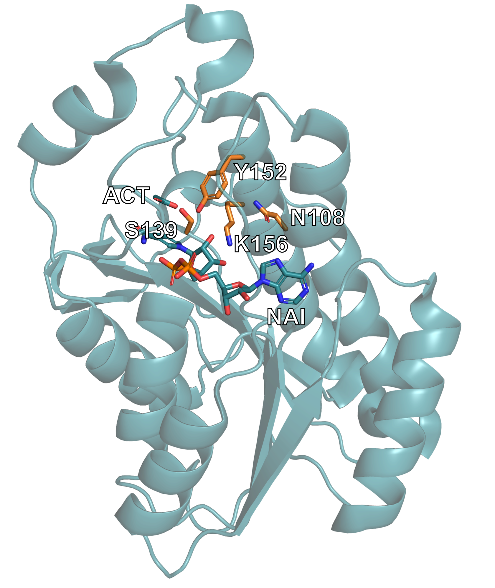
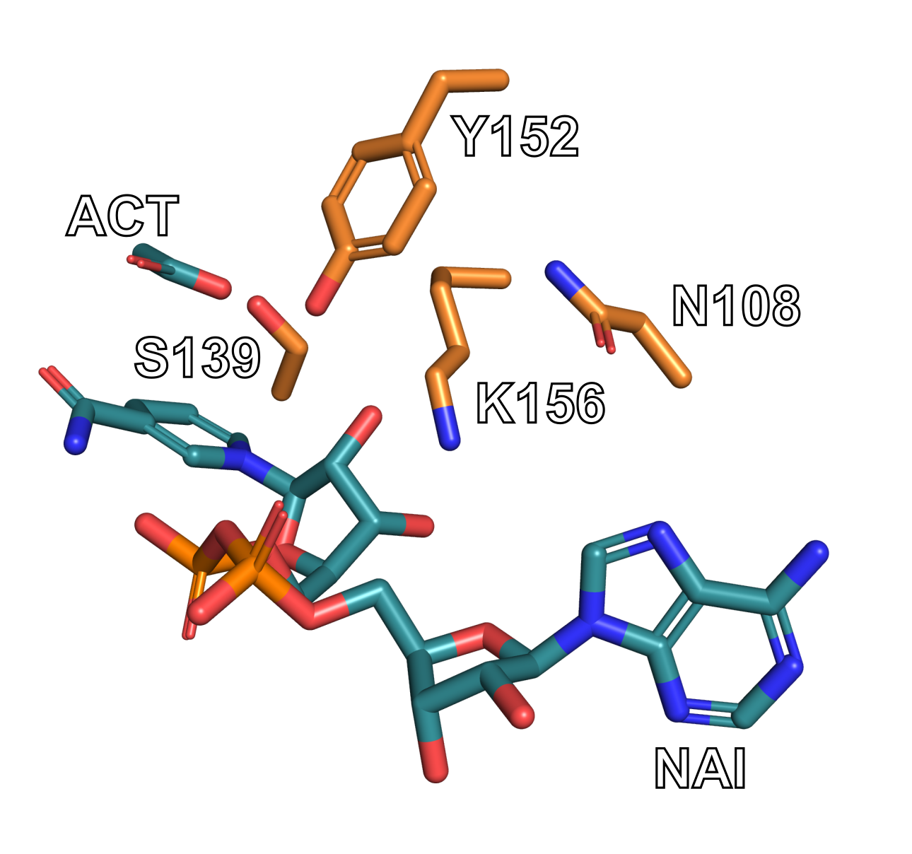
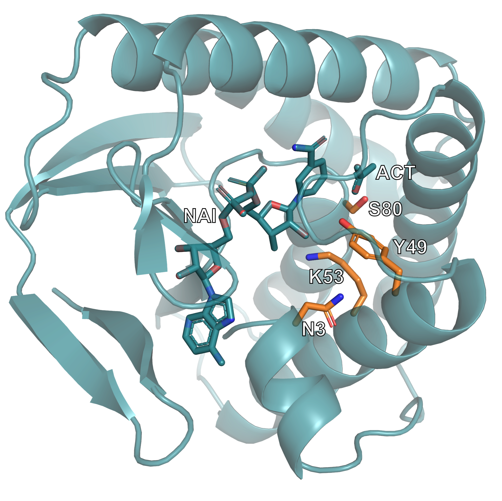

Intermediate Enzyme Design Tutorial¶
Table of Contents¶
Introduction¶
In this tutorial, you will generate protein designs to a fixed catalytic motif using RFdiffusion3 (RFD3).
You will learn how to extract a scaffold motif using PyMOL, configure inference constraints, run RFD3, and inspect the generated designs.
Note
PyMOL is not necessary to complete this tutorial, the steps shown here can be replicated using other protein visualization tools.
By the end, you will have a set of newly generated protein structures that preserve your catalytic motif while redesigning the surrounding scaffold.
Important
If you have never run an RFD3 calculation before, we recommend going through the Enzyme Design in RFdiffusion3 tutorial first. This tutorial provides more introductory information on running RFD3 than the current document.
Prerequisites¶
RFdiffusion3 installed and working
Familiarity with command line
Protein visualization software, here we will use PyMOL
Set-up¶
No input files are required for this tutorial as this tutorial walks you through how to create your input PDB. However, example input files and output files are provided at foundry/models/rfd3/docs/tutorials/intermediate_enzyme_tutorial_files.
Motif Preparation¶
Reference Structure¶
We use the Protein Data Bank structure 1MG5, corresponding to alcohol dehydrogenase, as a reference for motif extraction. The goal is to isolate the catalytic residues together with their associated ligands (cofactor and acetate).
Example Structure¶
Alcohol dehydrogenase (ADH) from Drosophila catalyzes the oxidation of alcohols. However, the reaction does not necessarily stop at the aldehyde stage – it has been demonstrated in this paper that Drosophila ADH can further oxidize acetaldehyde to acetate.
In the 1MG5 structure, the relevant ligands are:
NAI – nicotinamide cofactor
ACT – acetate
The catalytic triad is composed of Ser139, Tyr152, and Lys156. In addition, Asn108 is also crucial for catalysis, so we will focus on these residues for our design. You can find more information about the structure of the catalytic site in these two papers:
We have highlighted these important structural components below:
{kind=link}

The alcohol dehydrogenase 1MG5 structure is displayed, with the relevant catalytic residues and ligands highlighted.¶
Preparing the Input PDB¶
In this section we will use PyMOL to manipulate our the PDB file we retrieved to isolate the portion of the structure we want to use as the input to RFD3.
Important
The use of PyMOL is not required for this tutorial. Other visualization tools can be used and a prepared input PDB is available here.
Using the PDB identifier, one can fetch the structure in PyMOL using a single command.
fetch 1mg5
Create a new object containing the motif (chain A, catalytic residues, and ligands):
create motif, chain A and (resi 108+139+152+156 or resn ACT+NAI)
Note
To learn more about PyMOL’s
createfunctionality, see the PyMOL wiki.Verify that your selection matches the image below. Note that your selection will still have the backbone for residues 108, 139, 152, and 156. They have been removed from the image below for the sake of clarity.
You may have to unselect the original 1mg5 structure to see only the ‘motif’.

{kind=link}
Go to File → Export Molecule in PyMOL. You can use the default settings if a window appears.
Save the structure as a PDB file named “1mg5_motif.pdb”. The resulting file contains the extracted catalytic motif and is ready for diffusion inference.
Inference Constraints¶
RFdiffusion3 uses inference settings files to define how a design calculation should be executed. These settings constrain the diffusion process and specify what structural elements must be preserved, what regions can be generated, and whether symmetry or other structural constraints are applied. The configuration is provided in either JSON or YAML format. Detailed information on constraints can be found in Inference Calculation Basics.
We will create a constraints file that tells RFD3 to:
Use the extracted 1MG5 catalytic motif
Preserve key catalytic residues
Retain bound ligands (NAI and ACT)
Generate a 180–200 residue scaffold around the motif
Constrain selected atoms to maintain geometry
Create a file named 1mg5_motif.json and open it in your favorite text editor:
1mg5_motif.json
{
"enzyme_design_intro": {
"input": "./input_path/1mg5_motif.pdb",
"ligand": "NAI,ACT",
"unindex": "A108,A139,A152,A156",
"length": "180-200",
"select_fixed_atoms": {
"A108": "ND2,CG",
"A139": "OG,CB,CA",
"A152": "OH,CZ",
"A156": "NZ,CE,CD"
}
}
}
Important
You will need to change the path to the input structure based on where you placed it in your file system.
This configuration instructs RFdiffusion3 to generate a protein scaffold around a catalytic motif while maintaining key structural constraints. The top-level key defines a named inference configuration.
Here’s a brief description of the options used in the JSON file:
Key |
Value |
Description |
|---|---|---|
|
|
Supply the path and name of the input PDB file you created in the previous section. |
|
|
Including ligands allows RFdiffusion3 to maintain their spatial relationship to the motif during scaffold generation. |
|
|
Specifies motif residues whose positions are (partially) structurally fixed but whose sequence placement is not predefined. |
|
|
Defines the allowed total length of the generated protein scaffold. In this example RFdiffusion3 generates proteins between 180 and 200 residues, embedding the motif residues specified in |
|
|
Specifies which atoms remain fixed during diffusion. Example: only atoms ND2 and CG of residue A108 remain constrained. |
Important
For more information about the options used in this JSON file, see the introductory enzyme design tutorial or InputSpecification fields
Fixing the Atoms¶
The choice of the fixed atoms will vary by project and requires knowledge of the reactivity of your structure. Let’s go through an example of how some of the fixed atoms where chosen for this tutorial:
For Lys156, it is know that NZ is the “reactive atom” so it needs to be fixed to maintain its precise placement relative to the ligand/substrate. The carbons near it, the delta and epsilon carbons, are also held fixed to ensure the orientation of the tip of the side chain is correct relative to the ligand/substrate. The rest of the side chain and backbone is allowed to adapt to the designed backbone structure.
Unindexing the Motif¶
We have listed the catalytic residues as ‘unindexed’ so that RFdiffusion can fully design a new protein backbone around these residues. This will not limit how many residues need to come before, between, or after each residue. This flexibility is also why none of the backbone atoms are included in the select_fixed_atoms constraint – including them would likely over constrain the backbone and produce strained designs.
Run Inference¶
rfd3 design inputs=/path/to/1mg5_motif.json out_dir=/path/to/output
Adjust the paths according to your local setup.
The inputs file (JSON/YAML) defines the inference setup and constraints, while out_dir specifies where generated designs and logs will be written. If the directory does not exist, it will be created automatically.
Additional runtime and job configuration options (e.g. number of designs, trajectory saving, validation) can be found here.
Note
During execution, the terminal prints initialization messages, hardware allocation (e.g., GPU detection), runtime logs, and the sampling progress of the diffusion process. Warnings may appear about PDB and CCD clones, you can ignore them.
The total runtime depends primarily on the selected sequence length range, the number of generated designs, and the available compute hardware.
Analyzing the Outputs¶
Navigate to where your output files have been saved. In the next few sections we will look at some simple ways to analyze the quality of structures produced by RFD3.
Inspect the Metrics - Text-Based Analysis¶
Open the output files in your favorite text editor.
Locate the metrics file (JSON file) for one of your designs, for example and examine key values such as join_point_rmsd, loop fraction, helix_fraction, sheet_fraction. A straightforward evaluation focuses on:
a low
join_point_rmsdFor this example below ~0.5 Å is considered good, but a different threshold may be needed for your own projects
the absence of chain breaks (
n_chainbreaks)a reasonable secondary structure composition
Look at
loop_fraction,helix_fraction, andsheet_fractionFor most design problems, you’ll want the helix and loop fractions to be higher and the sheet fractions to be lower
"metrics": {
"join_point_rmsd_by_token": {
"A108": 0.16884943842887878,
"A152": 0.21462973952293396,
"A156": 1.0839585065841675
},
"insertion.mae": 0.49845656007528305,
"insertion.rmcd": 0.35271910205483437,
"insertion_rmsd": 0.36135003715753555,
"join_point_rmsd": 0.4891458948453267,
"n_conjoined_residues": 0,
"max_ca_deviation": 0.17333555221557617,
"n_chainbreaks": 0,
"n_clashing.interresidue_clashes_w_sidechain": 2,
"n_clashing.interresidue_clashes_w_backbone": 0,
"n_clashing.ligand_clashes": 0,
"n_clashing.ligand_min_distance": 2.814537525177002,
"non_loop_fraction": 0.6041666666666667,
"loop_fraction": 0.3958333333333333,
"helix_fraction": 0.4635416666666667,
"sheet_fraction": 0.140625,
"num_ss_elements": 10,
"radius_of_gyration": 15.200447511975698,
"alanine_content": 0.3160621761658031,
"glycine_content": 0.07772020725388601,
"num_residues": 193
Above is an example metrics section for a design. This example is provided for illustration, your data will be different.
Inspect the Structure - Structural Analysis¶
Open the selected PDB file in a molecular visualization tool such as PyMOL and assess whether the motif geometry is preserved, whether the overall fold appears plausible, and whether the catalytic residues are properly integrated into the scaffold. The diffused index map in the output JSON file for a given design shows where the original motif residues appear in the generated protein. For example:
"diffused_index_map": {
"A108": "A3",
"A139": "A80",
"A152": "A49",
"A156": "A53"
}
The identifiers on the left correspond to residues from the input motif structure, while the identifiers on the right indicate their positions in the generated design. For example, "A108": "A3" means that the motif asparagine appears at position 3 in chain A of the generated protein.
{kind=link}

This image shows one of the generated protein designs. The catalytic motif is highlighted, illustrating how it has been embedded within the newly generated scaffold while maintaining its structural arrangement.¶
Common Errors¶
JSON Configuration Errors¶
Ligand name mismatch
Ligand names must exactly match the residue names defined in the PDB file.
Syntax issues
Formatting errors such as missing brackets, misplaced commas, or incorrect quotation marks will invalidate the JSON file. Ensure that the file is properly structured and syntactically correct.
Command-Line Errors¶
If command-line arguments are incorrect, incomplete, or missing, the CLI typically returns descriptive error messages. These messages indicate which parameter is invalid or absent and should be reviewed carefully to identify and correct the issue.
Resources & References¶
RFdiffusion3 https://doi.org/10.1101/2025.09.18.676967
RFdiffusion3 documentation and GitHub https://github.com/RosettaCommons/foundry/tree/production
Structure: https://doi.org/10.1016/j.jmb.2004.10.028
Visualization tools: PyMOL